Conheça sobre mim:
Evelyn
Um espaço para compartilhar minha história, meus projetos, minha fé e tudo aquilo que faz parte da minha caminhada.
Conheça mais
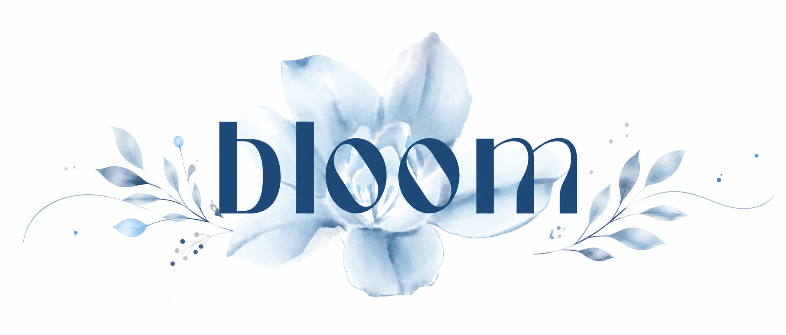
Um espaço para compartilhar minha história, meus projetos, minha fé e tudo aquilo que faz parte da minha caminhada.
Conheça mais
Sou uma menina muito alegre, amorosa e apaixonada pela vida. Acima de tudo, meu maior amor é Jesus, pois foi n'Ele que encontrei propósito e a verdadeira razão para viver. Meu maior desejo é compartilhar o amor de Cristo através de tudo o que faço, levando fé, esperança e graça, para que mais pessoas conheçam o cuidado de Deus e encontrem inspiração para florescer em Sua presença
É através dos louvores que meu coração mais se encontra com Deus. Amo louvar a Cristo; nesses momentos, parece que nada mais existe, apenas eu e Ele. Faço isso desde pequena e creio, de todo o coração, que esse é um dos dons que o Senhor me concedeu.
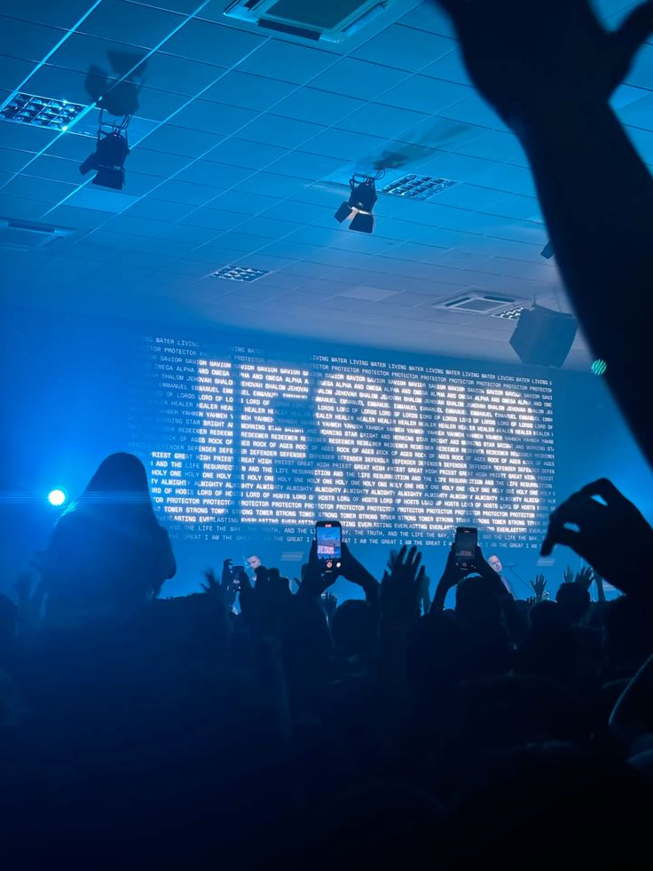
Através de Cristo, encontrei o verdadeiro caminho. Nele descobri o propósito, a esperança e a paz que eu tanto buscava. Ele é maravilhoso, e, pela Sua infinita graça, somos feitos novas criaturas. Em Cristo, tudo se renova, e cada dia é uma oportunidade de viver segundo a Sua vontade.
Através dos esportes, eu me sinto viva. Correr me faz sentir livre, como se cada passo me aproximasse da melhor versão de mim mesma. O suor é a prova de que todo esforço vale a pena, lembrando-me de que a disciplina, a perseverança e a dedicação sempre produzem frutos.
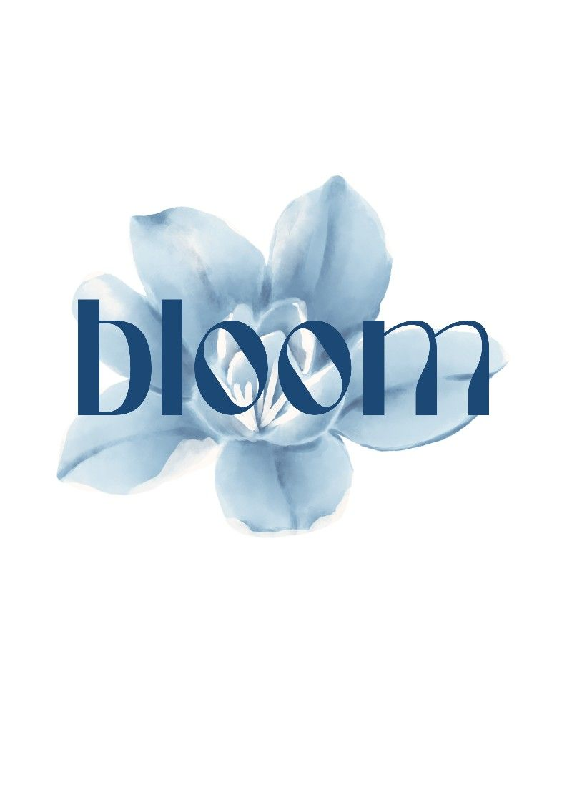
Bloom significa florescer. Esse nome foi escolhido porque representa aquilo que Deus deseja realizar em cada uma de nós. "Eu sou a videira; vocês são os ramos. Quem permanece em mim, e eu nele, esse dá muito fruto; porque sem mim vocês não podem fazer coisa alguma." — João 15:5 Quando entregamos nossa vida a Cristo, nos tornamos novas criaturas. Tudo aquilo que antes era apenas uma semente — os sonhos, os dons, os projetos e o propósito que Deus plantou em nosso coração — começa a crescer. Mas uma semente não floresce sozinha. Ela precisa ser cuidada, regada, receber a luz do sol e ser cultivada com amor. Assim também acontece conosco. Precisamos permanecer na presença de Deus, alimentar nossa fé por meio da Sua Palavra, da oração e da comunhão com outras mulheres. É nesse processo que o Senhor transforma o que parecia pequeno em algo muito mais belo do que poderíamos imaginar. A Bloom nasceu com esse propósito: ser um lugar de acolhimento, amor e crescimento espiritual. Um espaço onde mulheres caminham juntas, fortalecem sua fé e descobrem sua verdadeira identidade em Cristo. Aqui, acreditamos que cada mulher é preciosa aos olhos de Deus e que, quando permanece n'Ele, floresce no tempo certo, revelando toda a beleza do propósito que Ele preparou desde o início. "Assim que, se alguém está em Cristo, é nova criatura; as coisas antigas já passaram; eis que tudo se fez novo." — 2 Coríntios 5:17
Sou apaixonada por artes visuais e por tudo o que envolve criatividade. Acredito que o visual tem o poder de comunicar, inspirar e alcançar pessoas, transmitindo mensagens que muitas vezes vão além das palavras.
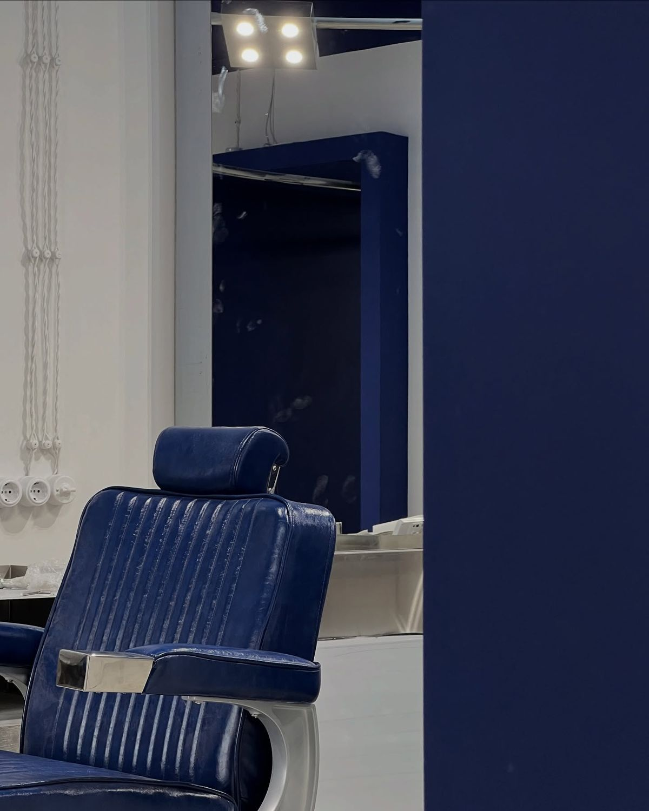
Amo trabalhar com cabelos, porque acredito que cuidar da beleza também é cuidar da autoestima. Ver mulheres mais confiantes, felizes e reconhecendo sua própria beleza torna esse trabalho ainda mais especial.
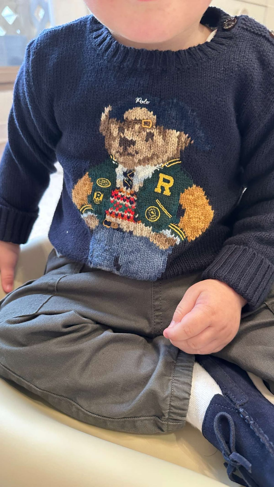
Amo cuidar de crianças, pois elas enxergam o mundo com pureza e sinceridade. Sua alegria, inocência e forma simples de viver me inspiram e tornam cada momento ao lado delas muito especial.
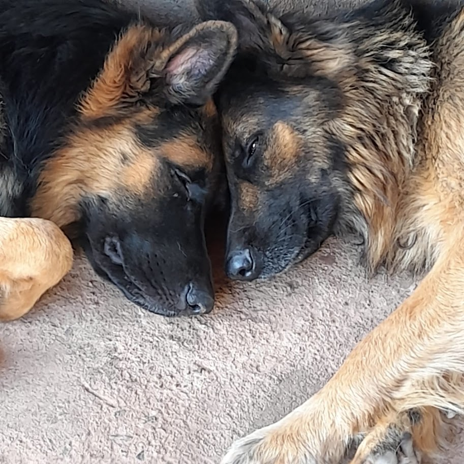
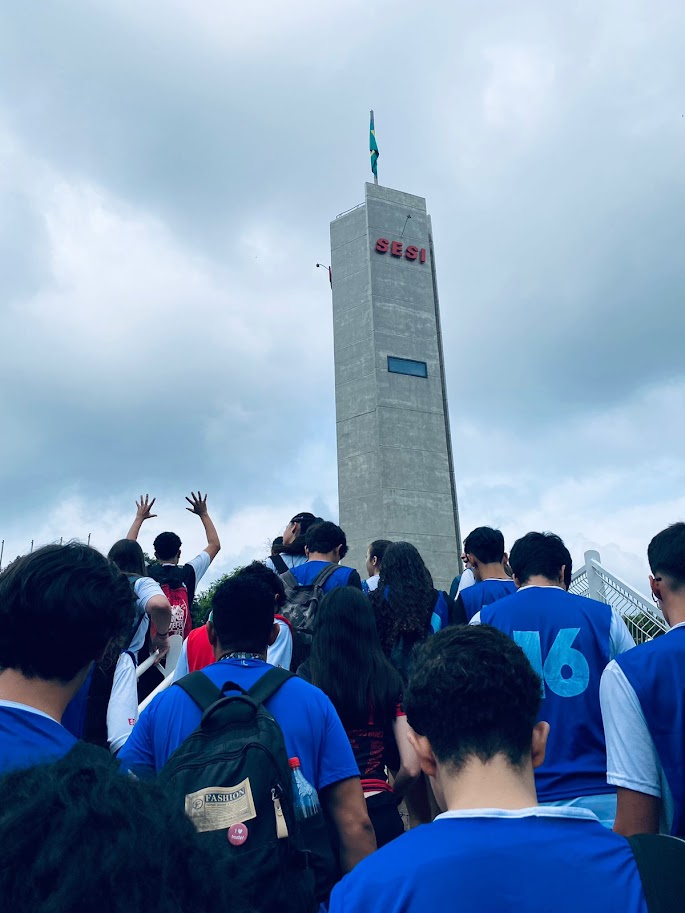
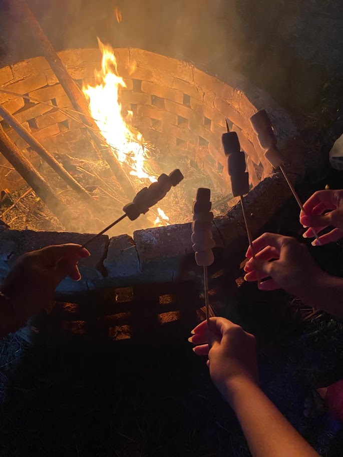
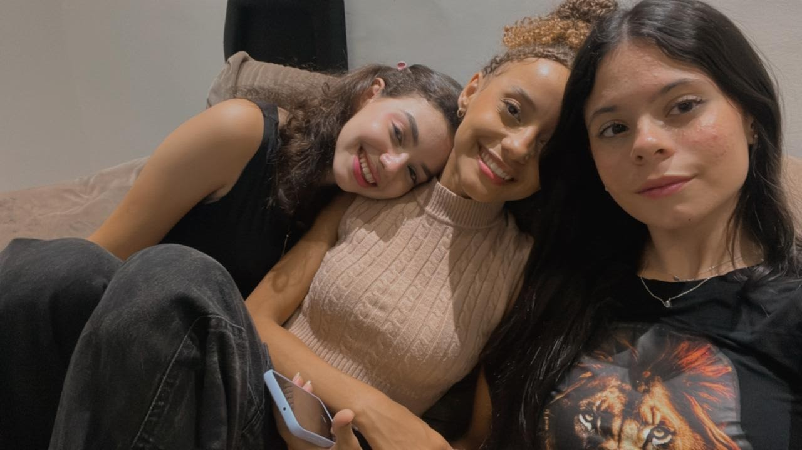
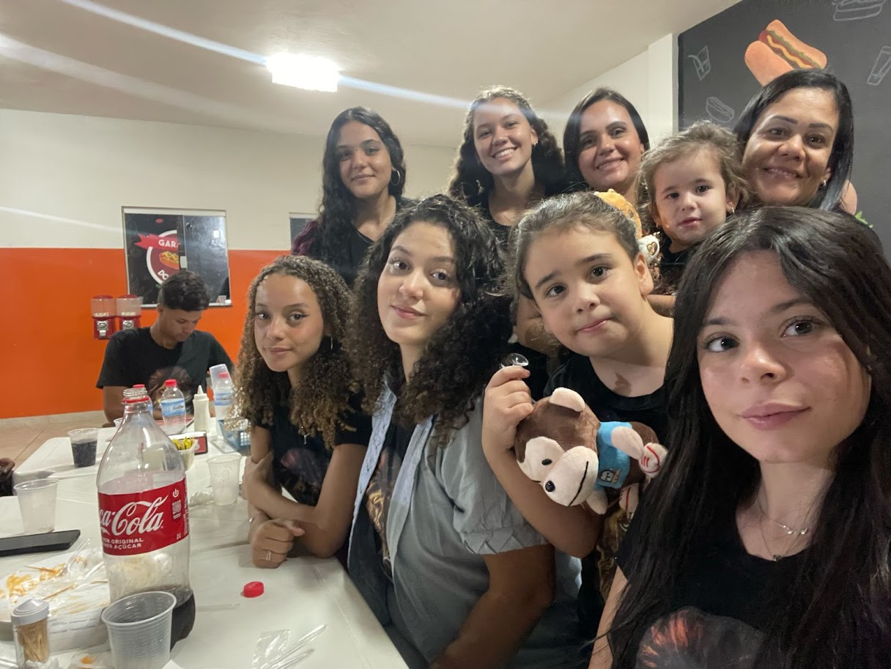
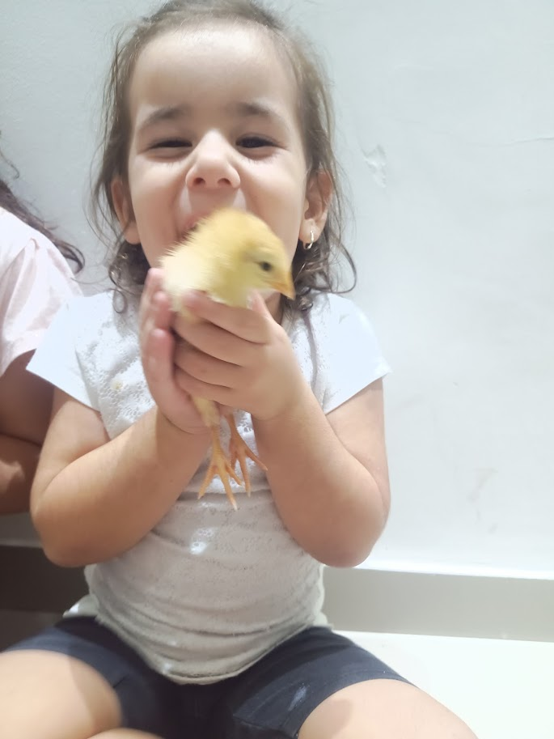
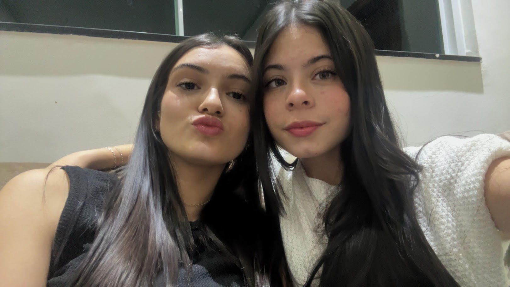
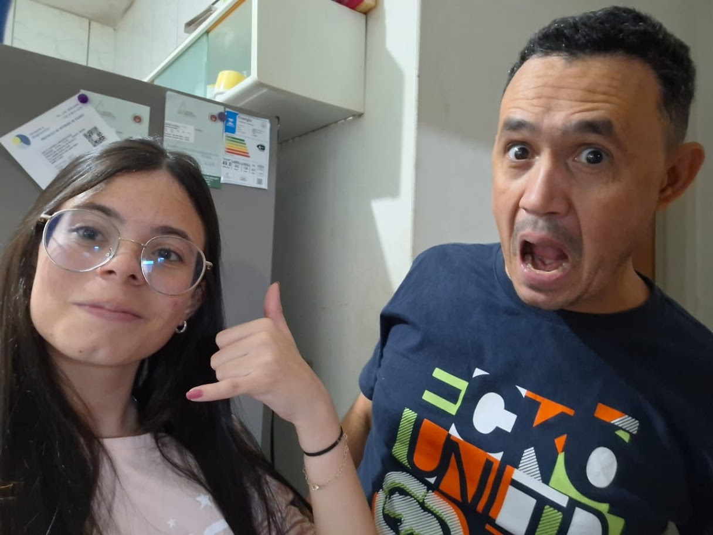